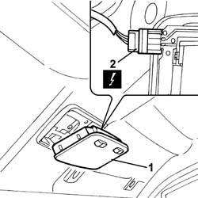
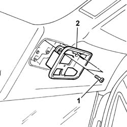

7040E10 FRONT COURTESY LIGHT - R+R
- Path
- Procedures > 70 FITTINGS > 7040 BODY INTERIOR FITTINGS AND TRIM > 7040E INTERIOR COURTESY LIGHT SYSTEM > 7040E10 FRONT COURTESY LIGHT - R+R
- Kind
- repair procedure (removal / refitting; the operation number is the code)
- Applies to
- all engines; all production periods
- Interactive page
- https://sloeber94.github.io/elrnDB-fDct/en/#/244001517
Applies to: all engines; all production periods
 Removing
Removing
 Refitting
Refitting- Disconnect the negative battery terminal.
1. Release the courtesy light from the roof using a suitable tool.
2. Disconnect the electrical connector for the courtesy light.
 | Description | Connector |
|---|---|---|
2 | Front courtesy light | G010 |
- Remove the front courtesy light.

Applies to: all engines; all production periods
1. Undo the bolts fixing the support.
2. Remove the front courtesy light mounting.

Applies to: all engines; all production periods
Refitting
Removing- Fit the courtesy light mounting in the housing in the roof.
- Fit the mounting tightening the fixing bolts.
- Connect the electrical connector for the courtesy light.
| Description | Connector |
|---|---|---|
. | Front courtesy light | G010 |
- Fit the courtesy light on the mounting.
- Connect the negative battery terminal.